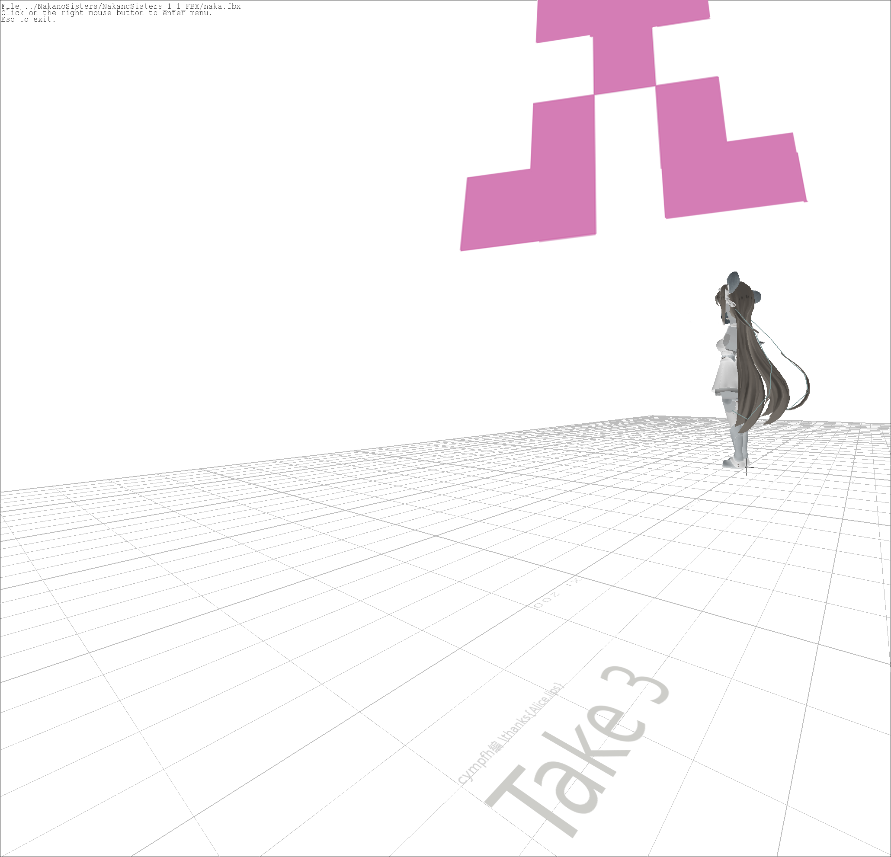

Created by himono and cympfh
Transition Styles
You can select from different transitions, like:
None -
Fade -
Slide -
Convex -
Concave -
Zoom
news
冬コミ (c89)だします (落ちてなければ): ゆゆ式アンソロ本
Alice.lips では絵師を募集しています. ご連絡は cympfh または himono まで.
夏コミ (c88) に出版した "All apologies" をpdfで公開します.
publication
c88
- 2015/08/14-16
- Comike Web Catalog (requires login)
- 日曜日 東キ03b
- 創作・アニメ・ゲーム(男性向) (200)
 "All Apologies" written by himono You can get pdf! |
 "Take 3" written by cympfh |
about us
cympfh と himonocympfh
@cympfh
cympfh
%w(cympfh gmail com).join('.').sub('.', '@')

himono
log
2015/8/16 accepted at c88 @三日目(Sun.)東キ03b
We published 2 novel books (one by himono and one by cympfh).
Please see /pub/c88 for detail
2015/8/2 v0.2.1
2015/1/8 v0.1.2: alice-lips.github.io -> alice.fail (permanent link)